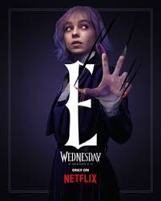
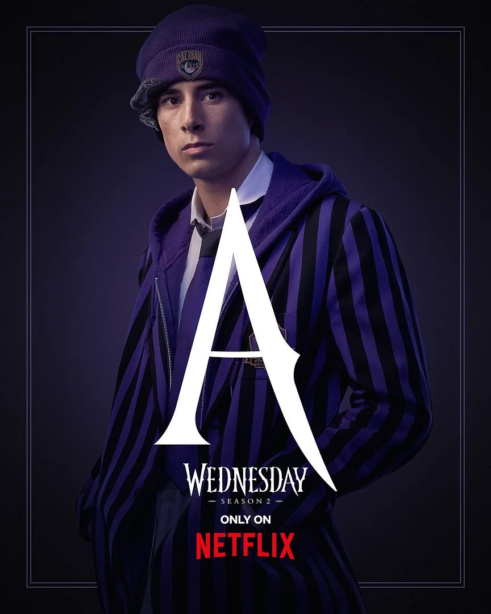

☠️ Bienvenue dans l’univers de Mercredi ! ☠️
Plongez au cœur de l’intrigante académie Nevermore et suivez les aventures de Mercredi Addams, une adolescente au caractère sombre et unique. Entre mystères, amitiés inattendues et enquêtes passionnantes, découvrez les secrets de cette série qui mélange humour noir, fantastique et émotions.
Mercredi Addams est la fille unique de la famille Addams, connue pour son caractère sombre et son humour macabre. Elle est souvent représentée comme une adolescente intelligente, cynique et très indépendante. Avec ses longues tresses noires, sa peau pâle et ses vêtements sombres, elle incarne un style gothique reconnaissable. Mercredi se distingue par son esprit mordant et sa manière glaciale de répondre aux autres. Elle aime les expériences étranges et les activités qui sortent de l’ordinaire, souvent liées à la mort ou au morbide. Malgré son apparence froide, elle est profondément attachée à sa famille, même si elle le montre à sa manière. Elle n’a pas peur de défier l’autorité et fait preuve d’une grande détermination. Son intelligence et sa curiosité la poussent à aller toujours plus loin dans ses recherches et réflexions. Mercredi se démarque aussi par sa créativité, notamment dans ses inventions ou ses idées surprenantes. C’est un personnage unique qui mélange ironie, noirceur et une forme très personnelle de sensibilité.
Enid Sinclair est une louve-garou vive, joyeuse et colorée, totalement opposée à Mercredi Addams. Elle se distingue par ses cheveux multicolores et son style vestimentaire très pétillant. Toujours souriante, elle incarne l’optimisme et la bonne humeur dans toutes les situations. Malgré son côté extraverti, elle cache une certaine insécurité, notamment liée à sa difficulté à se transformer en loup. Elle est très sociable, adore discuter et se faire des amis, contrairement à Mercredi plus solitaire. Enid est loyale et attentionnée, toujours prête à soutenir ceux qu’elle aime. Elle apporte une touche de légèreté et de chaleur à l’univers sombre de Mercredi. Sa patience et son ouverture d’esprit lui permettent d’accepter les différences des autres sans jugement. Enid adore les activités modernes comme les réseaux sociaux et suit les tendances. Elle représente l’équilibre entre la douceur, l’énergie et le courage, ce qui fait d’elle un personnage attachant.
La Chose, appelée Thing en anglais, est l’un des personnages les plus originaux et surprenants de l’univers des Addams. Il s’agit d’une main vivante, indépendante, capable de se déplacer seule et d’exprimer toute une gamme d’émotions sans jamais parler. Dans la série Wednesday, la Chose est envoyée par les parents de Mercredi pour la surveiller à la Nevermore Academy, mais elle finit rapidement par devenir bien plus qu’un simple espion. Fidèle et dévouée, elle se transforme en véritable amie et confidente pour Mercredi, toujours prête à l’aider dans ses enquêtes et à la protéger des dangers. Grâce à ses gestes précis et à son langage inventif, la Chose réussit à se faire comprendre et à transmettre des messages pleins d’humour ou d’émotion. Sa personnalité est attachante : courageuse, drôle et un peu maladroite parfois, mais toujours loyale. Elle n’hésite pas à risquer sa propre “vie” pour sauver Mercredi, ce qui montre l’importance de leur lien. Derrière son apparence étrange, la Chose symbolise la fidélité, la solidarité et la différence. Elle prouve que même les êtres les plus inattendus peuvent jouer un rôle essentiel et toucher le cœur des autres.
Ajax Petropolus est un élève de la Nevermore Academy, l’école pour jeunes marginaux et êtres surnaturels où étudie Mercredi Addams. C’est un Gorgon, une créature mythologique capable de pétrifier ceux qui croisent son regard lorsque ses serpents apparaissent sur sa tête. Timide et un peu maladroit, Ajax essaie de mener une vie normale malgré sa nature particulière. Il porte souvent une casquette pour cacher ses serpents et éviter tout accident. Sous ses airs réservés, Ajax est un garçon gentil, loyal et sincère. Il se lie d’amitié avec Enid Sinclair, la colocataire pleine d’énergie de Mercredi, et leurs sentiments finissent par devenir plus profonds au fil du temps. Même s’il manque parfois de confiance en lui, Ajax montre qu’il a un grand cœur et qu’il est prêt à se battre pour ceux qu’il aime. Dans la série, il représente l’un des aspects les plus humains de la Nevermore Academy : il a peur, doute, mais veut s’accepter tel qu’il est. Son histoire rappelle qu’être différent n’est pas une faiblesse, mais une force, à condition d’avoir le courage de s’assumer. Ajax apporte ainsi une touche de douceur, d’humour et de sincérité à l’univers sombre et mystérieux de Wednesday.
